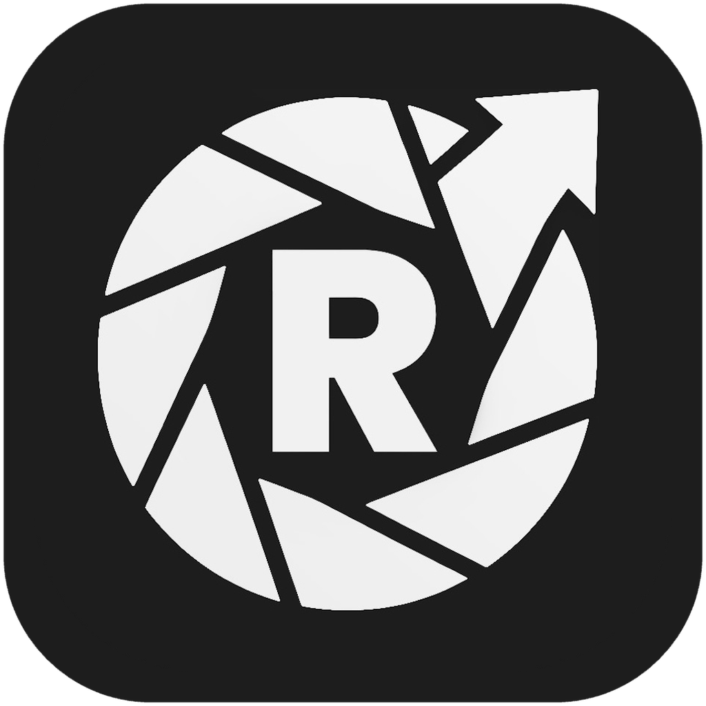
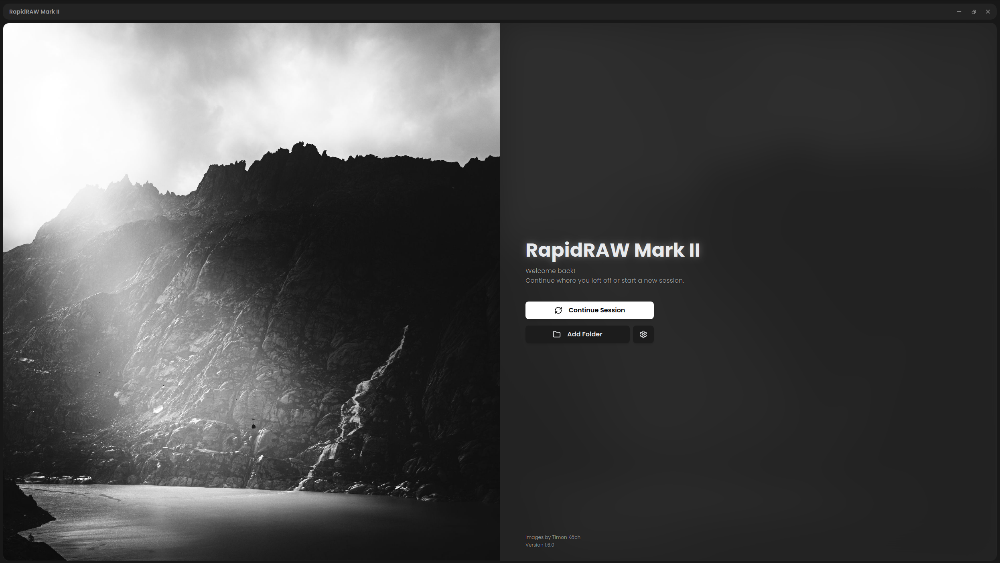
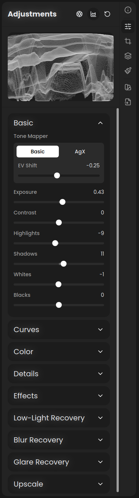

RapidRAW Mark II
Recovery-first RAW editing for difficult captures.
Source milestones · MKII changes · Build from source · Original RapidRAW

Operational focus
Mark II concentrates on source material where visibility and context matter: high-ISO or long-exposure frames, motion or focus blur, veiling glare, and exports that need notes or location data attached. It keeps RapidRAW's fast, non-destructive workflow, then adds a compact recovery stack and a quieter, inspection-oriented interface.
Built for difficult framesThe adjustment panel is organized as a true accordion, keeping the standard photographic controls familiar while placing specialized recovery tools in a clear sequence.
Processing remains local-first. MKII removes account and hosted AI-provider integration; optional AI models are supplied by the user and loaded from the local models directory. |
 |
What Mark II changes
| Area | MKII-specific direction |
|---|---|
| Low-Light Recovery | Live hot-pixel removal and denoising driven by measured image noise, with separate chroma smoothing and detail preservation. |
| Blur Recovery | FFT Wiener deconvolution for motion, defocus, and Gaussian blur; includes blur estimation, interactive direction control, presets, and artifact suppression. |
| Glare Recovery | Estimates and subtracts smooth veiling glare while limiting local contrast boost; the estimated veil can be displayed for inspection. |
| Inspection workflow | A true accordion adjustment panel with Basic open by default, plus split-view comparison for checking processed detail against the source. |
| Contextual export | Configurable callout boxes with notes, metadata prefill, optional MGRS coordinates, saved templates, placement, spacing, and opacity controls. |
| Output tools | One-step 2× Lanczos upscaling that saves a new file beside the original. |
| GPU resilience | VRAM-aware recovery, tile-local allocations, scaled fallbacks, tuned export workers for integrated GPUs, clearer GPU errors, and a Windows backend fallback ladder. |
| Local-first surface | Self-hosted fonts, a strict webview content security policy, local user-provided AI models, and removal of remote account/provider and community-preset code. |
Versions and builds
Versioned MKII source milestones are published under
Tags. The Windows tag workflow prepares
installer artifacts and draft GitHub Releases; published packages will appear on the
Releases page. Until a package is
published for your platform, build the mkii branch from source.
For the mainstream project, its latest features, and its official packages, use the original RapidRAW releases.
Build from source
Install the Tauri 2 prerequisites for your platform, Node.js 22, and the stable Rust toolchain.
$ git clone --branch mkii --single-branch https://github.com/RustRunner/RapidRAW-MKII.git
$ cd RapidRAW-MKII
$ npm ci
$ npm startUseful development checks:
$ npm run typecheck
$ npm run lint
$ npm run buildMKII inherits RapidRAW's Windows, macOS, Linux, and Android architecture. The recovery pipeline is GPU-intensive; a modern WGPU-compatible adapter and 16 GB of system memory are recommended for large RAW files. Integrated GPUs are supported with reduced worker and VRAM budgets, but processing speed varies by image size and adapter.
Contributing
Bug reports and focused pull requests are welcome in this repository. Please target the
mkii branch and note whether an issue affects an MKII recovery feature or can also be
reproduced in upstream RapidRAW. General RapidRAW fixes may be better contributed directly to the
upstream issue tracker.
Attribution and license
- Original project: RapidRAW by Timon Käch
- Mark II fork and recovery-focused changes: RustRunner/RapidRAW-MKII
- Original acknowledgements: RapidRAW's Special Thanks section credits the projects and research that underpin the editor.
RapidRAW Mark II remains licensed under the GNU Affero General Public License v3.0. Copyright in the original work and subsequent modifications belongs to the respective contributors.